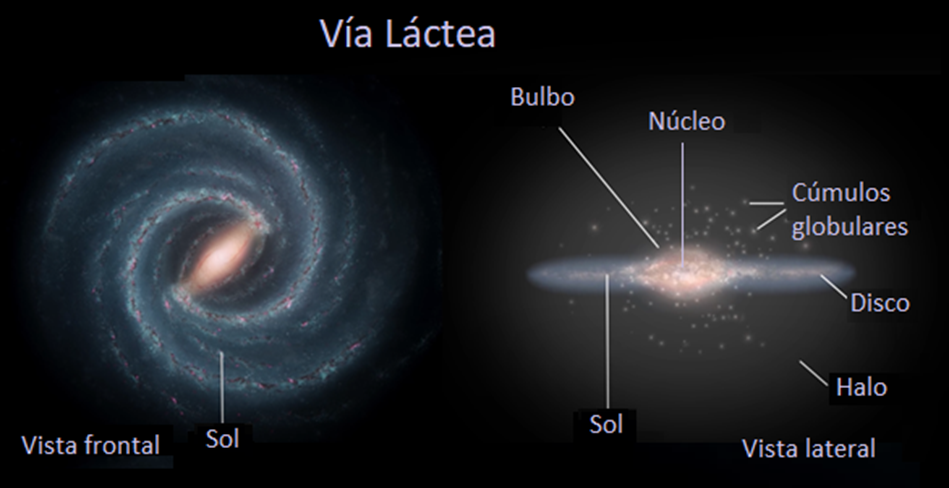

Estructura y componentes
Se piensa que la Vía Láctea es una de las galaxias más antiguas del universo conocido, dado que en muchos de sus cúmulos globulares se encuentran algunas de las estrellas más antiguas que se conocen. La formación de la galaxia tuvo lugar hace alrededor de 12 o 13 mil millones de años, una edad muy próxima a la estimada para el cosmos entero, y tuvo su inicio en el material de los cúmulos globulares que componen el halo estelar.
Sin embargo, la Vía Láctea ganó una mayor complejidad y densidad a través de su encuentro con otras galaxias menores, que acabaron fusionadas con ella. De hecho, en la actualidad la galaxia está devorando parcialmente la masa de otras galaxias satélites, como la Gran Nube de Magallanes y la Pequeña Nube de Magallanes.
Consiste en una gigantesca agrupación de estrellas, planetas y nubes de gas con forma de espiral barrada y un diámetro medio de alrededor de 200.000 años luz.
Es posible percibir la Vía Láctea a simple vista en una noche despejada, como una luz blanca borrosa que se extiende alrededor de la esfera celeste.
Esto se debe a que el sistema solar se encuentra en una región apartada del centro, aproximadamente a 25.766 años luz, en uno de los brazos de la espiral; al Sol le toma 225 millones de años terrestres completar una vuelta alrededor del centro galáctico.
Además, la Vía Láctea presenta un halo extendido que rodea su disco, compuesto principalmente por estrellas más antiguas y materia oscura. Esta sustancia enigmática, invisible pero detectada por sus efectos gravitacionales, contribuye significativamente a la masa total de la galaxia.
Nuestro sistema solar reside en uno de los brazos exteriores de esta espiral, en las afueras de la Vía Láctea. Esta posición nos brinda una perspectiva única para estudiar y comprender la intrincada estructura y la rica diversidad de componentes que componen esta vasta galaxia.
Está conformada por entre 100 y 400 mil millones de estrellas, la más antigua tiene alrededor de 13 mil millones de años de edad, apenas 600 mil años más joven que el resto de la galaxia.

Medidas precisas de posición, brillo y distancia para aproximadamente un millón de estrellas de nuestra Galaxia en un radio de 6.500 años luz alrededor del Sol, aportadas por el telescopio espacial Gaia, han permitido a un equipo del IAC vislumbrar sus etapas iniciales.
Estudios anteriores habían descubierto que el halo galáctico presentaba muestras inequívocas de estar formado por dos componentes estelares distintas, una dominada por estrellas más azules que la otra.
La forma de moverse de las estrellas de la componente azul pronto permitió identificarla como los restos de una galaxia enana (Gaia-Encélado) que impactó con una primigenia Vía Láctea. En su centro habita un agujero negro súper masivo conocido como Sagitario A, cuya masa equivale a 4 millones de veces la del Sol y que fue observado directamente por primera vez en 2022.
Sin embargo, la naturaleza de la población roja y el momento de la fusión entre Gaia-Encélado y nuestra galaxia no se habían desvelado hasta ahora.
La Vía Láctea con el paso del tiempo
La Vía Láctea forma parte del Grupo Local, un conjunto de alrededor de 40 galaxias distintas, entre las cuales existen tres destacables por su gran brillo y gran tamaño:
La galaxia de Andrómeda.
La Vía Láctea.
La galaxia del Triángulo.
El resto son galaxias satélite que orbitan alrededor de manera más o menos libre, y conforman tres sistemas galácticos claramente diferenciables. El Grupo Local tiene un diámetro de unos 10 millones de años luz y una masa estimada total de 2,3 a 0,6 x 1012 veces la del Sol.
El Grupo Local, a su vez, forma parte de un supercúmulo de Laniakea (del haiwaiano “cielos inconmensurables”), donde se encuentran alrededor de 100.000 galaxias cercanas. Antiguamente se consideraba que formaba parte del supercúmulo de Virgo, pero este último se entiende hoy como un pequeño lóbulo de Laniakea.